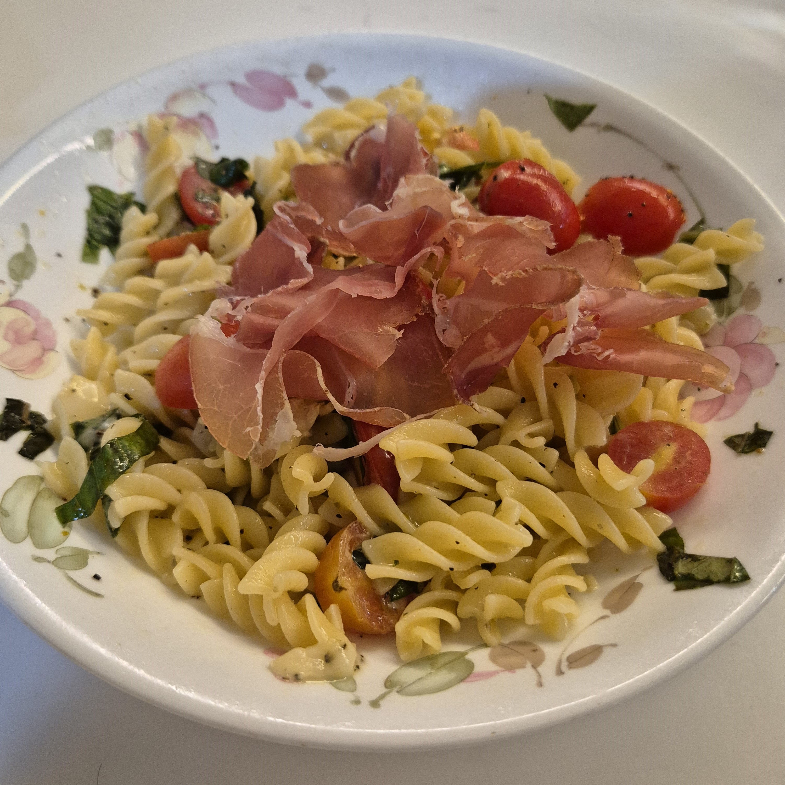
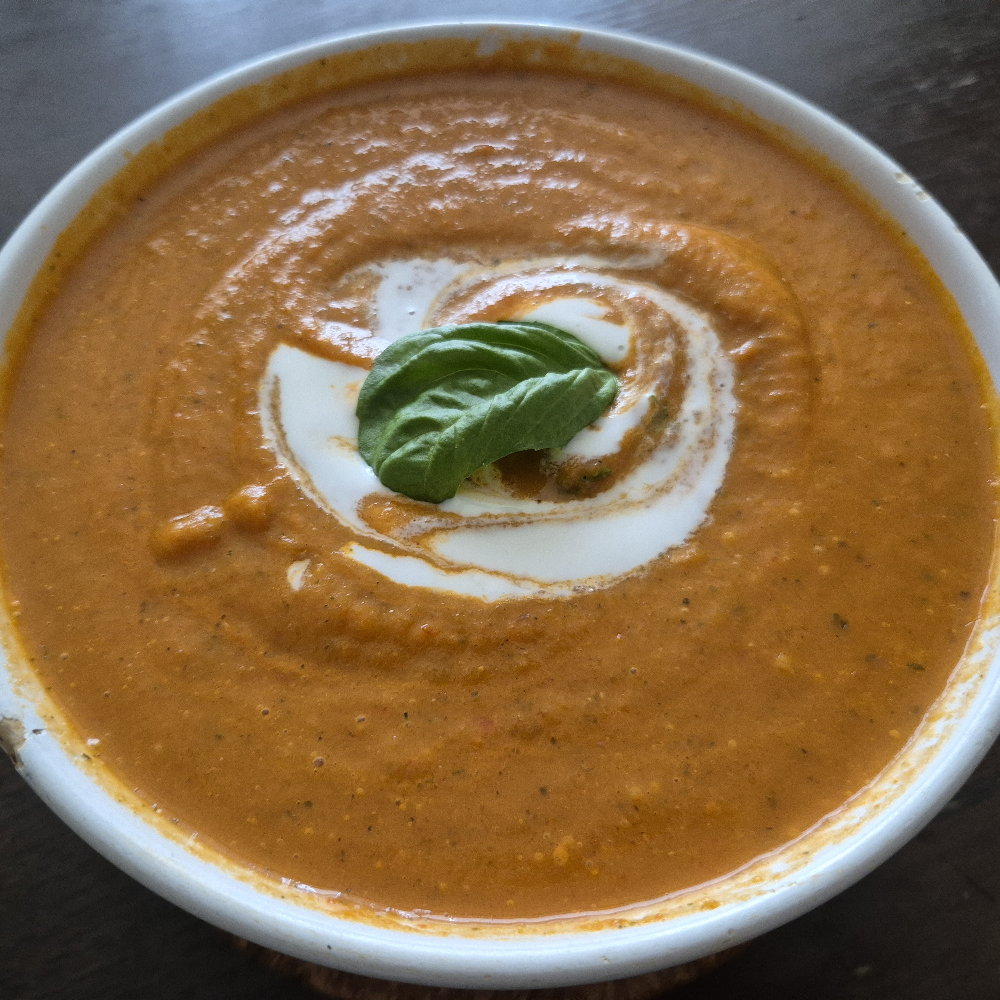

Ranking food I made during summer break!!!
Jump to easiest foodsJump to hardest foods
I eat a lot of food, I like a lot of food, and thus I cook a lot of food - me
I tried around 30+ recipes during the past 3-4 months of summer break. And so as a sort of reflection on my achivements and also because I just want to yap to the void and whoever sees this website, I shall impart and share my newly acquired knowledge as a totally qualified individual in the form of two numbered lists.
My Ranking Criteria
- Yummyness
- Convenience of obtaining ingredients
- Would I cook it again
Top 3 easiest foods I cooked
- Pan-fried Scallops (I used this recipe for the scallops and this recipe for the pasta)
- Thai Basil Minced Chicken (I used this recipe)
- Air Fryer Crispy Pork Belly (I used this recipe)
I used frozen scallops that have been in my freezer for god knows how long and they still turned out so good.
I feel like thai basil should be relatively easy to find in Singapore. My mum also bought a thai basil plant so the convenience factor is perchance a tad bit biased.
There are other foods I've cooked that are honestly easier than this but when you consider how long it normally takes to cook pork belly vs. this version, I feel like it deserves to be in the top three. Like trust me the skin was actually really crispy.
Honourable mentions: Mapo tofu and this lazy girl dinner pasta that I found on Tiktok a year ago and made like 4 times since then
Top 3 hardest foods I cooked (but it was worth it)
- Gyoza/Dumplings (I used this recipe)
- Beef Stew (I used this recipe)
- Chicken Pot Pie (I used this recipe)
I prefer the pan-fried dumplings to the soup ones. Not gonna lie the reason this is ranked so high is because the miso soup also tasted really good. I highly recommend everyone to add diced ginger and cilantro into their miso soups.
Finding and preparing the ingredients for this is actually not that hard except for the red wine maybe but I was lucky enough to have some in the house. What you really need to watch out for is how quickly the liquid reduces so just make sure you keep an eye on the pot and have some extra stock on hand. This turned out really good I bet I can sell this for $20 per plate.
The person in the Tiktok recipe was lowkey lying when she said this was a lazy girl recipe but I'll forgive her because of how good this turned out. I'll probably use an actual pot for this next time.
Honourable mentions: Ratatouille and the creamy tomato soup that I made using its leftovers
Yes all of the recipes I used are from Tiktok. That app has ruined the way I consume mindless entertainment. But hey at least I got something out of it.